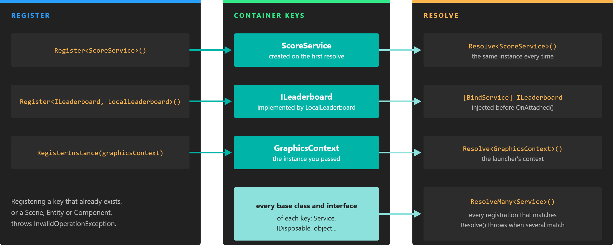

Application Container

A registration by type is created lazily on the first resolve; an instance is stored as it is. Both are also reachable through their base classes and interfaces.
The Application Container is the dependency injection container of an Evergine application. It stores the objects that must be reachable from everywhere: the services of your project and the ones Evergine needs to run, such as the GraphicsContext, the AssetsService and the ScreenContextManager. The application itself has almost no logic; it asks the container for these objects and drives them every frame.
You reach the container through the Container property of the Application class, usually as this.Container inside your application class or Application.Current.Container anywhere else.
Note
Every registration is keyed by type, and there can only be one registration per type. Registering the same type twice throws an InvalidOperationException.
Register
Register a Type
Register<T>() tells the container which type to create, but creates nothing yet. The instance is built the first time someone resolves it, and the same instance is returned from then on:
public partial class MyApplication : Application
{
public MyApplication()
{
// ... the services registered by the project template ...
this.Container.Register<ScoreService>();
}
}
To create the instance, the container picks the public constructor with the most parameters that it can fill with registered objects. A service that needs another one can simply ask for it in its constructor:
public class LeaderboardUploader
{
private readonly ScoreService scores;
// ScoreService is registered, so the container can call this constructor.
public LeaderboardUploader(ScoreService scores)
{
this.scores = scores;
}
}
Register an Implementation of an Abstraction
Register<T, TImplementation>() registers TImplementation so that it is resolved when someone asks for T. Code that depends on the interface does not need to know which implementation the profile chose:
public interface ILeaderboard
{
void Submit(int score);
}
public class LocalLeaderboard : ILeaderboard
{
public void Submit(int score)
{
// Store the score on the device...
}
}
this.Container.Register<ILeaderboard, LocalLeaderboard>();
// Anywhere in the application:
var leaderboard = Application.Current.Container.Resolve<ILeaderboard>();
Register an Instance
RegisterInstance(instance) stores an object that you have already created. Use it when the object needs configuration before anyone uses it, or when only the launcher project knows which implementation to create. This is how every profile registers its graphics context:
GraphicsContext graphicsContext = new DX12GraphicsContext();
graphicsContext.CreateDevice();
// The registration key is the static type of the argument: GraphicsContext.
application.Container.RegisterInstance(graphicsContext);
Tip
The key is the generic type argument, which C# infers from the declared type of the variable. In the example above, Resolve<GraphicsContext>() finds the context but Resolve<DX12GraphicsContext>() does not. Write RegisterInstance<GraphicsContext>(new DX12GraphicsContext()) to make the key explicit.
Singletons and Factories
Every Register overload accepts two optional parameters:
| Parameter | Default | Description |
|---|---|---|
factoryDelegate |
null |
A function that the container calls every time the type is resolved, instead of calling a constructor. When it is set, reuse is ignored. |
reuse |
true |
true creates one instance on the first resolve and returns it from then on. false creates a new instance on every resolve. |
// A new, independent uploader every time it is resolved.
this.Container.Register<LeaderboardUploader>(reuse: false);
// Built by your code every time it is resolved.
this.Container.Register<ILeaderboard>(() => new LocalLeaderboard());
Important
Keep Service classes as singletons, registered by type with the default reuse or registered as an instance. The service lifecycle tracks one instance per service type, and objects returned by a factory delegate never join it. Factories and reuse: false are meant for plain objects.
Base Classes and Interfaces
A registration is also stored under every base class and interface of its key type. Resolve<Service>() or Resolve<IDisposable>() would therefore match many registrations at once, which makes them ambiguous: Resolve throws an InvalidOperationException in that case. Use ResolveMany to get all of them instead.
Resolve
| Method | Description |
|---|---|
T Resolve<T>() |
Returns the object registered for T, creating it if needed. Returns null if nothing is registered for T. |
object Resolve(Type type) |
The same, without generics. |
IEnumerable<T> ResolveMany<T>() |
Returns every object registered for T or for a type that derives from it. Returns null if there is none. |
IEnumerable<object> ResolveMany(Type type) |
The same, without generics. Returns an empty collection if there is none. |
bool IsRegistered<T>() |
Returns true if something is registered for T. |
Inside components, scene managers and services, prefer the [BindService] attribute to calling Resolve yourself:
using System;
using Evergine.Framework;
namespace MyProject
{
public class PickupBehavior : Behavior
{
// Resolved from the container before OnAttached() runs.
[BindService]
private ScoreService scoreService;
// Interfaces work too, as long as exactly one registration matches.
[BindService(isRequired: false)]
private ILeaderboard leaderboard;
protected override void Update(TimeSpan gameTime)
{
this.scoreService.Add(1);
}
}
}
Resolve is the right tool outside Evergine elements, or where the dependency is only known at runtime:
var assetsService = Application.Current.Container.Resolve<AssetsService>();
Unregister
| Method | Description |
|---|---|
Unregister<T>() |
Removes the registration for T. |
Unregister(Type type) |
The same, without generics. |
Unregistering a Service also destroys it: it runs OnDeactivated(), OnDetached() and OnDestroy(), and the instance cannot be used again.
// The player left the online mode: stop and release the service.
this.Container.Unregister<SessionTimerService>();
What Cannot Be Registered
Scenes, entities and components belong to a scene, not to the application. Registering a Scene, Entity or Component (or any subclass) throws an InvalidOperationException. Reach entities and components through the EntityManager and the bindings instead.